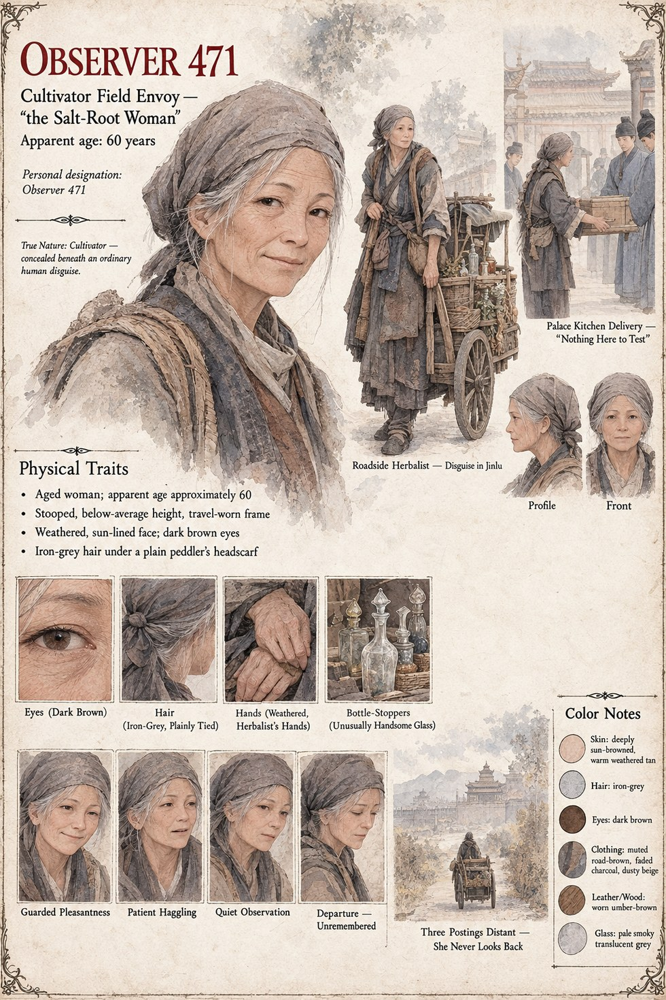

Observer 471
Cultivator Field Envoy · “the Salt-Root Woman” · Case 3115
A field agent of the Cultivators, presenting in Jinlu as an itinerant herbalist and peddler known locally only as the Salt-Root Woman — stooped, travel-worn, entirely unremarkable, pushing a cart of dried ginseng and salves through the palace district on an ordinary trade day. She sells four crates of goods to the under-steward of the palace kitchens, the bottle among them, and never learns whose hands it eventually reaches or what it costs the household that bought it.
She does not look back at the gate. She never does. By the time Case 3115 closes, she is three postings distant, filing reports on a subject world that has no idea it was ever observed at all.
“She did not look back at the gate. She never did.”